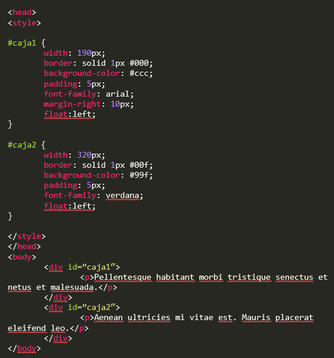

LECCION 3
Introducción a la presentación en pantalla con CSS
El papel del archivo de reset CSS
Una técnica para homogeneizar las presentaciones en pantalla consiste en utilizar un archivo CSS de reset que elimine los estilos por defecto aplicados a los elementos HTML utilizados con más frecuencia. Con este reseteo de valores podemos conseguir una base fiable y coherente sobre la cual construir nuestros nuevos estilos. Eric Meyer fue el primer desarrollador que preparó hojas de estilo de reset, que después distribuyó para uso público. Muchos diseñadores se preparan sus propias hojas de estilos de reset para resolver sus propias necesidades.
EL uso de hojas de reset CSS puede tener algunas desventajas, sobre todo para los neófitos: tendrán que recordar constantemente que están utilizando dicha hoja de estilos y deben tener en cuenta cómo afectará a los distintos elementos del sitio web. Si estamos aplicando la hoja de reset a todo el sitio, algunos de sus efectos pueden resultar sorprendentes, sobre todo con elementos con los que no estamos especialmente familiarizados.
Breve historia de las técnicas de presentación en pantalla para la Web
El módulo Técnicas para la elaboración de presentaciones: PowerPoint y Office Mix correspondiente al Itinerario formativo en Elaboración de contenidos didácticos del programa de formación de URJC online, tiene como principal objetivo que adquieras las competencias necesarias para hacer de tus materiales una fórmula mucho más atractiva para tus estudiantes.
Para producir estos materiales didácticos, trabajaremos en la elaboración de distintos tipos de presentaciones que fomenten el aprendizaje de tus estudiantes, captando su atención y fomentando la comprensión y el recuerdo.
Estas presentaciones se guardarán en un formato adecuado para que puedas ponerlas a disposición de tus estudiantes, a través de tus asignaturas de Aula Virtual.
A parte de la importancia del lenguaje en las presentaciones, Melissa Marshall pone en valor otros aspectos importantes para hacer presentaciones más accesibles y atractivas a tus estudiantes, que ya hemos nombrado anteriormente, como utilizar ejemplos, historias y analogías para enganchar y captar la atención, transmitiendo sin comprometer a la información. Uno de sus consejos es no presentar la información como una lista sin numerar o, como dice ella, utilizando “balas” que maten tu presentación. Las balas presentan demasiada información que satura al estudiante, se utiliza un lenguaje que no es accesible y además no es atractiva. En cambio si se presenta la información de manera visual y apoyada con una frase o una anécdota, se captará la atención, motivará al estudiante y hará que el concepto se procese mejor favoreciendo el entendimiento del concepto.
Introducción a las distintas opciones de presentación de páginas
En los últimos años el comportamiento de los consumidores en México y en el mundo ha cambiado, en el momento en que se requiere adquirir un producto o algún servicio la primer opción es buscar en Internet, comparar precios, comparar relación costo beneficio e inclusive buscar reseñas de otros compradores para posteriormente realizar la compra, ya sea en tienda física o en algún sitio web.
Es por estas nuevas tendencias de consumo que cualquier empresa sin importar el giro debe de tener una página o un sitio web en el cual presente sus productos o servicios, dicha información estará disponible cuando algún cliente potencial este buscando información, precios o características relacionadas al giro de tu empresa, dandote la posibilidad de convertir a dicho visitante en un cliente y a su vez te da la oportunidad de ser más competitivo.
El elemento <div>: creación de una estructura CSS de dos columnas con anchura fija
El elemento div es un contenedor genérico sin un significado semántico en particular. Se utiliza comúnmente en el desarrollo de documentos con propósitos estilísticos, en conjunto con los atributos style y class. También puede resultar útil para proveer atributos comunes a los elementos contenidos por el, como por ejemplo lang o title.
Los autores deberían considerar a div como último recurso, reservado únicamente para aquellos casos en los que elementos con mayor significado, como main, header, footer, nav o article no son aplicables.
La propiedad float CSS
La propiedad float de CSS es la que permite que los elementos floten sobre el lado que se indica, mientras que el resto de los elementos que no tienen la propiedad float definida se encuentran alrededor.
De acuerdo a las normas de CSS2, los elementos flotantes pueden tener tres valores: left, right y none. El primero define que el elemento fluirá hacia la izquierda, el segundo a la derecha, mientras que el tercero quita la propiedad.
Por defecto, los elementos cuya propiedad float no se encuentra definida, es none.
Ejemplos de uso:
La propiedad float posiciona una caja moviéndola todo lo posible a la izquierda o derecha de su posición original. Los tres valores de esta propiedad se interpretan de la siguiente manera:
• left, la caja se desplaza todo lo posible a la izquierda de la posición en la que se encontraba. El resto de elementos de la página se adaptan para mostrarse a su derecha (a menos que se indique lo contrario mediante la propiedad clear).
• right, la caja se desplaza todo lo posible a la derecha de la posición en la que se encontraba. El resto de elementos de la página se adaptan para mostrarse a su izquierda (a menos que se indique lo contrario mediante la propiedad clear).
• none, la caja no se desplaza respecto de su posición original. Además de ser el valor por defecto de esta propiedad, el valor none se puede utilizar para eliminar el float aplicado a un elemento mediante otros selectores.
La principal característica del posicionamiento float es que el resto de elementos de la página se adaptan para fluir alrededor de la caja flotante.
Creación de columnas con la propiedad float
Uno de los usos más frecuentes para la propiedad float, es el diseño de páginas web a dos o más columnas.
A continuación, veremos a grandes rasgos como se construye un diseño de este tipo.

La propiedad clear
La propiedad CSS clear especifica si un elemento puede estar al lado de elementos flotantes que lo preceden o si debe ser movido (cleared) debajo de ellos. La propiedad clear aplica a ambos elementos flotantes y no flotantes.
Cuando es aplicado a bloques no flotantes, mueve el border edge del elemento hacia abajo hasta que este debajo del margin edge de todos los floats relevantes.
Este movimiento (cuando acontece) causa que margin collapsing no ocurra. Cuando se aplica a elementos flotantes, mueve el margin edge del elemento debajo del margin edge de todos los floats relevantes. Esto afecta la posición de floats posteriores, ya que estos no pueden ser posicionados más arriba que los primeros.
Los floats que son relevantes para ser limpiados (cleared) son los primeros floats dentro del mismo contexto de formato de bloque.
Valores
• none: Es un keyword que indica que el elemento no es movido hacia abajo para limpiar elementos flotantes anteriores.
• left: Es un keyword que indica que el elemento es movido hacia abajo para limpiar elementos flotantes a la izquierda.
• right: Es un keyword que indica que el elemento es movido hacia abajo para limpiar elementos flotantes a la derecha.
• both: Es un keyword que indica que el elemento es movido hacia abajo para limpiar tanto elementos flotantes de la izquierda como de la derecha.
• inline-start: Es un keyword que indica que el elemento es movido hacia abajo para limpiar elementos flotantes al inicio del bloque contenedor, estos son los elementos con valor float left en scripts ltr (left to right) y elementos con valor float right en scripts rtl (right to left).
• inline-end: Es un keyword que indica que el elemento es movido hacia abajo para limpiar floats al final del bloque contenedor, estos son los elementos con valor float right en scripts ltr (left to right) y elementos con valor float left en scripts rtl (right to left).
Creación de un menú de navegación basado en listas con “float”
Añadir estilos para el texto
Efecto de los márgenes internos y externos en una estructura de anchura fija
Repaso al uso de márgenes internos y externos
Hemos visto dos métodos para separar los elementos dentro de una página. El primero consiste en añadir margen interno (padding) al elemento div contenedor. En este caso la ventaja es que todos los elementos dentro de este div se ven afectados al mismo tiempo, es una solución rápida y eficiente. Su desventaja es que aumenta la anchura total del propio contenedor. Para compensar esta expansión, tenemos que dejar algo de espacio adicional a los lados.
El segundo método consiste en añadir márgenes externos a los elementos que están dentro del propio div. Su desventaja es que necesitamos más código y hay que prestar atención a los detalles, tenemos que ir viendo cómo se posicionan los elementos individualmente. Su ventaja es que el posicionamiento de la columna es más predecible, puesto que solo tenemos que tener en cuenta una anchura total.
Aplicar una imagen de fondo al pie de página
1. Localiza el div #footer y sustituye todo el contenido de texto que hay dentro por este que aparece aquí:
<div id="footer">
<p>Copyright Worldwide Apparel 2011 </p>
<p>All content on this site is confidential and should not be shared with anyone outside of Worldwide Apparel.<p>
</div>
2. Guarda la página y ábrela en el navegador. A cada uno de los párrafos se le aplican las reglas de párrafo descritas en la hoja de estilos. Ahora vamos a añadirle una imagen de fondo a todo el contenedor div.
3. En la hoja de estilos interna, encuentra la regla para el pie de página (“#footer”). Añade una nueva regla para aplicar una imagen de fondo indicando un archivo de la carpeta de imágenes de tu equipo:
#footer {
clear:both;
background-color:#BA2B22;
background-image:url(images/footer_background.jpg);
background-repeat:no-repeat;
}
El pie de página tiene ahora una imagen de fondo por aplicación de una nueva regla CSS.
4. Modifica la regla para el pie de página añadiendo las líneas en rojo:
#footer {
clear:both;
background-color:#BA2B22;
background-image:url(images/footer_background.jpg);
background-repeat:no-repeat;
width:960px;
height:128px;
}
Guarda el archivo y vuelve a mostrar la página en el navegador. Ahora el tamaño de la zona de pie de página coincide con el tamaño de la foto. El paso siguiente consiste en ajustar los estilos del texto que va dentro, separándolos.
5. En el editor de texto, encuentra la regla #footer y justo debajo añade esta otra regla para párrafos, que se aplicará únicamente a los párrafos del footer:
#footer p {
margin:10px 0px 0px 20px;
width:280px;
font-family:Verdana, Geneva, sans-serif;
font-size:0.689em;
}
Esta regla añade un margen superior de 10 pixels y margen izquierdo de 20 pixels a ambos párrafos del pie.
6. Guarda la página y visualízala en el navegador.
Ajuste fino de la estructura visual de la página